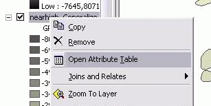
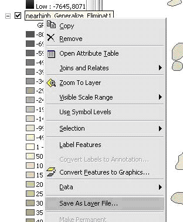
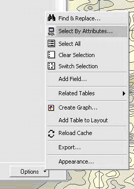
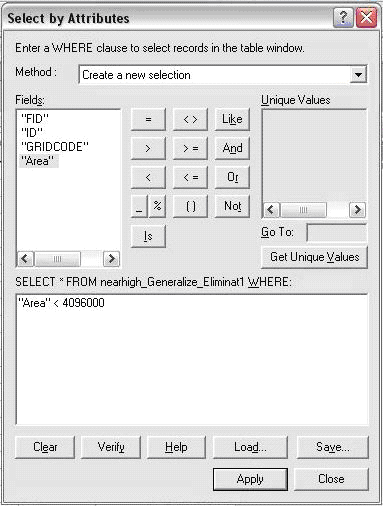
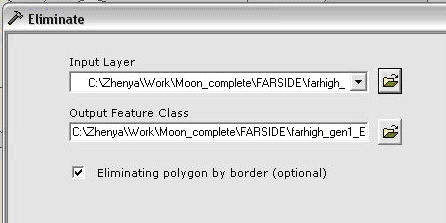
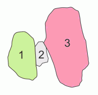

Генерализация полигонов по площади
В статье рассматривается генерализация полигонов по площади.
В картографии данный вид генерализации, который является одним из наиболее простых и часто используемых, называют отбором картографируемых явлений, для которого устанавливают определенные параметры, называемые цензом отбора. [Салищев К.А. Картоведение. М.: изд. МГУ, 1982. 408 с.] Цензы или границы отбора объектов определяются количественными (например, сохранить все озера, площадью более 5 км2) или качественными (например, сохранить на карте все соленые озера) показателями. Также этот тип генерализации можно использовать для исправления ошибок, возникающих при векторизации растра, в процессе которой часто появляются мелкие «осколочные» полигоны. В описываемом нами методе цензом отбора является площадь полигонов, хотя в качестве ценза можно использовать и другие пространственные характеристики и атрибуты объектов.
 Подготовка shape-файла к генерализации
Подготовка shape-файла к генерализации
Подготовка к генерализации заключается в расчете площадей для всех полигонов.
Запускаем ArcGIS и добавляем во фрейм полигональный shape-файл (File\Add data…). Открываем атрибутивную таблицу (щелчок правой кнопкой мыши на загруженную тему, далее Open Attribute Table):

Если в таблице отсутствует поле, содержащее площади полигонов (Area и т.д.), необходимо добавить поле и рассчитать площадь полигонов.
Сохранить shape-файл как слой (layer) (щелчок правой кнопкой мыши на загруженную тему, далее Save As Layer File…)

 Выделение генерализуемых полигонов
Выделение генерализуемых полигонов
Выберем полигоны от которых нужно избавиться. Для этого, откроем атрибутивную таблицу слоя и сделать выборку (Options\Select By Attributes). Поскольку мы генерализуем полигоны по площади, необходимо составить запрос и выделить те полигоны, площадь которых меньше определенной величины. Другими словами, все полигоны, площадь которых меньше указанной, будут выделены и затем удалены. Чем большая площадь будет указана, тем, соответственно, большее количество полигонов будет генерализовано.

В открывшемся диалоговом окне набрать “имя поля” < n, где n – граница выборки. Затем нажать кнопку Apply. Например:

Будут выделены все полигоны, имеющие площадь меньше n=4096000 м2.
Собственно генерализация производится с помощью инструмента Eliminate.
Открыть ArcToolbox. В открывшемся окне найти и запустить двойным щелчком инструмент Eliminate (Data Management Tools\Generalization\Eliminate). В появившемся окне инструмента кнопкой открыть генерализуемый слой (Input layer), нужные полигоны которого уже выделены, после чего имя результирующего shape-файла (Output Feature Class) появится во второй строке:

Если генерализуемые полигоны (на рисунке – маленький полигончик 2) нужно объединять с теми, с которыми у них наибольшая общая граница (на рисунке – полигон 1), то необходимо поставить галочку Eliminating polygon by border. Если же с теми, которые больше (на рисунке – полигон 3), то галочку нужно снять.

После нажатия клавиши OK процесс генерализации запустится и по его окончании новый полигональный shape-файл добавится в проект.
После завершения генерализации необходимо снова сделать запрос к уже новому shape-файлу и если все еще остались полигоны, площадь которых меньше установленной, нужно закрыть редактирование старой темы (кнопка Editor\Stop Editing), сохранить новый генерализованный полигональный shape-файл как слой, и выполнить уже относительно него весь процесс (начиная с раздела 2) еще раз.
Важно отметить, что процесс и результат работы eliminate нужно четко контролировать и правильно выбирать метод объединения полигонов (по общей границе или большей площади). В частности, длинные узкие полигоны в процессе генерализации могут присоединиться не к тому полигону, что в свою очередь, особенно при работе с крупномасштабными слоями, может привести к ошибкам. Например, при генерализации полигонального слоя, отображающего реки и узкие полосы берегов, генерализуемые узкие полигоны береговой линии могут присоединиться к полигону реки, что приведет к искажению географических и атрибутивных параметров нового шейп-файла.
Ссылки по теме
Дата создания: 27.07.2008
Автор(ы): Евгений Лазарев